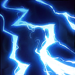
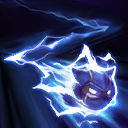
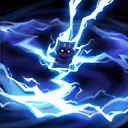

起手裝備
 增幅典籍
增幅典籍
雷霆風暴、火箭腰帶、帽子前三件與最新Solo表一致；腰帶占成裝格，無限寶珠與虛空接後段。


五件成裝與鞋子分開列示；起手與核心是購買路線，不是額外佔用的成裝欄位。鞋子完成時機仍依對線壓力與回城金錢調整。


死亡電刑加熱忱戰鬥、斷切、血脈、骨甲與同路7.3b一致，短爆發和近身大絕續戰目的不同，不混用中路防守條件。


凱能：閃現調整進退，點燃補短換血收尾與重創；沒有擊殺窗口時不要為點燃強行離開兵線。
加點優先：Q > W > E
保留Q > W > E，逐級表與7.3b巴龍路分頁一致；大絕仍在5、9、13級，基本技能各四點。
技能命中會附加風暴印記；同一目標累積三層時暈眩並回復能量。
投擲手裡劍，對第一個命中的敵人造成魔法傷害並附加印記。

被動每數次普攻強化並附加印記；主動電擊附近帶印記的敵人造成傷害並再加一層。

化為閃電提高跑速並可穿越單位，穿過敵人造成傷害與印記，結束後提高攻速。

召喚雷暴持續攻擊附近英雄，重複附加印記並造成魔法傷害，是主要團戰控場技能。
三印記需確認強化普攻已準備好；三技進場後四技持續疊印記，不能只靠空按二技暈人。
1技 → 強化普攻 → 2技
先用一技與強化普攻疊印記，再以二技觸發第三層完成暈眩。
3技 → 4技 → 2技 → 1技
三技加速切入後立即開大，等待印記疊層再用二技觸發群體暈眩。
4技 → 3技 → 2技 → 1技
從視野死角進場，優先覆蓋敵方後排；保留三技作為追擊或退出手段。
前期利用射程與 Q 積標記消耗，E 留作追擊或逃生。
雷霆風暴 → 海克斯科技火箭腰帶 → 死亡之帽為主要成裝順序。雷霆風暴改首件，再接火箭腰帶與死亡之帽；無限寶珠移後段，腰帶是獨立成裝。
後期耐心等後排站位重疊，再從側面進場打多人大絕，不要正面走過去。
科加斯沉默、蒙多抗控、墨菲特強開會讓進場難度上升，大絕要從側翼接隊友控制。
對局名單是機制與分路判斷，不代表固定勝率；需同時看雙方熟練度、兵線與陣容。
科加斯沉默、蒙多抗控、墨菲特強開會讓進場難度上升，大絕要從側翼接隊友控制。
雷霆風暴改首件，再接火箭腰帶與死亡之帽；無限寶珠移後段，腰帶是獨立成裝。
威脅名單參考同分路指南；較有利名單仍是機制推論，需連同兵線、打野與玩家熟練度判斷，並非台服勝率排名。
以下情境替換以本頁7.3b五件成裝為基準。同一格多項建議擇一；鞋子由二級升三級，主動裝另占成裝格。
高
觸發：敵方前排物防／魔防成形，或近身普攻威脅明顯。
目前配置已提供部分坦克／普攻威脅所需功能；先按威脅調整購買順序，不為分類名稱強行多買一件。
高
觸發：主要死亡原因是一輪集火，無法完成輸出或控制。
虛空之杖 → 中婭沙漏
面對爆發／暴擊多時，將虛空之杖換成中婭沙漏；先保留前三件核心，若替換核心位須確認目前死亡或輸出不足的原因。
面對爆發／暴擊多時，將虛空之杖換成中婭沙漏；先保留前三件核心，若替換核心位須確認目前死亡或輸出不足的原因。
高
觸發：敵方法術先手或持續魔法傷害成為主要威脅。
虛空之杖 → 女妖面紗
面對魔法傷害多時，將虛空之杖換成女妖面紗；先保留前三件核心，若替換核心位須確認目前死亡或輸出不足的原因。
面對魔法傷害多時，將虛空之杖換成女妖面紗；先保留前三件核心，若替換核心位須確認目前死亡或輸出不足的原因。
高
觸發：魔法傷害與控制鏈影響生存或輸出。
魔力之靴 → 水星之靴
魔法傷害及可縮短的控制占主導時，整條改水星之靴→鎖鏈軍靴；韌性不能縮短擊飛。
魔法傷害及可縮短的控制占主導時，整條改水星之靴→鎖鏈軍靴；韌性不能縮短擊飛。
韌性不能縮短所有控制，例如擊飛；護盾與解控各有適用條件。
高
觸發：敵人持續回復令集火失敗。
虛空之杖 → 黑魔禁書
面對治療／吸血多時，將虛空之杖換成黑魔禁書；先保留前三件核心，若替換核心位須確認目前死亡或輸出不足的原因。
面對治療／吸血多時，將虛空之杖換成黑魔禁書；先保留前三件核心，若替換核心位須確認目前死亡或輸出不足的原因。
本頁校正版本：7.3b；校正日期：2026-10-15。
參考來源標示版本：7.3b
Tier、出裝、符文與對局是本站編輯建議，不是官方推薦或已驗證台服勝率。v118延續同日v117的逐路複核，針對來源缺口及數值衝突再核對；未宣稱所有技能已在手機內逐級實測。
評級理由：維持A；7.3b Solo A，側翼多人大絕有價值，但正面進場容易被反控。
WildRiftFire 參考攻略 ↗ · WildRiftFire 參考攻略 ↗ · Riot 官方資料 ↗
重新讀取正文的版本欄為7.3b，並核對配裝、符文、逐級技能；不是只讀頁面標題。
維持A；7.3b Solo A，側翼多人大絕有價值，但正面進場容易被反控。
雷霆風暴、火箭腰帶、帽子前三件與最新Solo表一致；腰帶占成裝格，無限寶珠與虛空接後段。
死亡電刑加熱忱戰鬥、斷切、血脈、骨甲與同路7.3b一致，短爆發和近身大絕續戰目的不同，不混用中路防守條件。
保留Q > W > E，逐級表與7.3b巴龍路分頁一致；大絕仍在5、9、13級，基本技能各四點。
歷史資料有後續調整時，以較新版本數值為準。
| 項目 | 調整前 | 調整後 |
|---|---|---|
| 基礎生命 | 660 | 600 |
| 每級生命成長 | 120 | 130 |